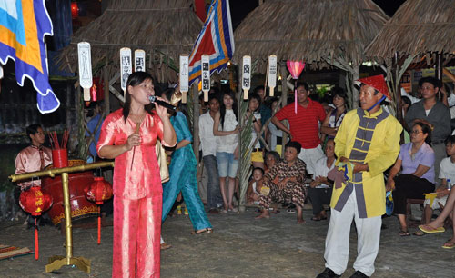

Cách Chơi Hát Bài Chòi
Hát Bài Chòi là một trò chơi dân gian vừa có tính nghệ thuật vừa mang tính giải trí cao. Trò chơi này được tổ chức trong các dịp lễ hội, với sự tham gia của nhiều người. Để tham gia Hát Bài Chòi, người chơi sẽ cần chuẩn bị một bộ bài Chòi và các dụng cụ cần thiết.
1. Các bước chơi
Khi các chòi đã có người chơi, anh, chị Hiệu đến từng chòi thu tiền và phát thẻ bài. Người điều khiển hội chơi Bài chòi là anh, chị Hiệu (người hô). Mở đầu trò chơi bằng một hồi trống chầu, anh, chị Hiệu đến trước ban tổ chức nói như nói lối Hát bội: Hiệu phát bài đã đủ Cho hiệu thủ bài tì. Sau lời hô mở đầu, anh, chị Hiệu bắt đầu xuống, rồi luân phiên hò, hát giới thiệu lần lượt các con bài trong bộ Bài chòi. Anh, chị Hiệu vừa hô và vừa bước ra đứng cạnh ống thẻ bài, xóc đi xóc lại rồi chậm rãi bốc một con bài trong ống tre và hát. Sau những câu hát mở đầu, Hiệu đưa mắt nhìn con bài mình vừa bốc xem là con bài gì và hát làn điệu bài chòi mang tên con bài đó, cuối lời hô/hát Hiệu xướng tên thẻ bài lên rõ to cho tất cả mọi người đều nghe bằng chất giọng rặt phương ngữ tiếng Quảng không lẫn vào đâu được. Cứ như vậy, mỗi con bài là một lời hô/hát. Anh, chị Hiệu tiếp tục hô các con bài cho đến khi chòi nào có đúng quân bài Hiệu đang hô thì người chơi cầm mõ gõ lên ba tiếng cắc – cắc – cắc hoặc xướng to lên "ăn rồi", lúc này người phụ việc sẽ đến trao cho một cây cờ đuôi nheo nhỏ. Người chơi ở chòi nào "ăn" đủ 3 con (được 3 cờ) thì hô "tới" và gõ một hồi mõ kéo dài. Lúc này trống tum, trống cán ở chòi trung tâm đánh vang lên, nghĩa là đã có người thắng và chấm dứt một ván bài. Lời hô kết thúc: Cờ kia đã tới – Trống nọ đã giục xong – Hiệu đâu! Hãy mang rượu trầu và kim ngân trao cho người trúng thưởng đó nghe!… Sau đó sẽ tiếp tục một ván bài khác
2. Các quy tắc
Quy tắc chính trong trò chơi là người chơi cần phải chú ý đến tốc độ của câu hát và tìm đúng lá bài càng nhanh càng tốt. Nếu một người chơi trả lời sai hoặc không tìm được lá bài đúng, họ sẽ bị trừ điểm hoặc không được tính điểm cho lượt chơi đó.
4. Kết thúc trò chơi
Trò chơi kết thúc khi tất cả các câu hát đã được hát hết. Người chơi có điểm số cao nhất sẽ là người chiến thắng. Hát Bài Chòi không chỉ là một trò chơi vui nhộn mà còn là một hoạt động giúp duy trì và phát huy các giá trị văn hóa dân gian của Việt Nam.